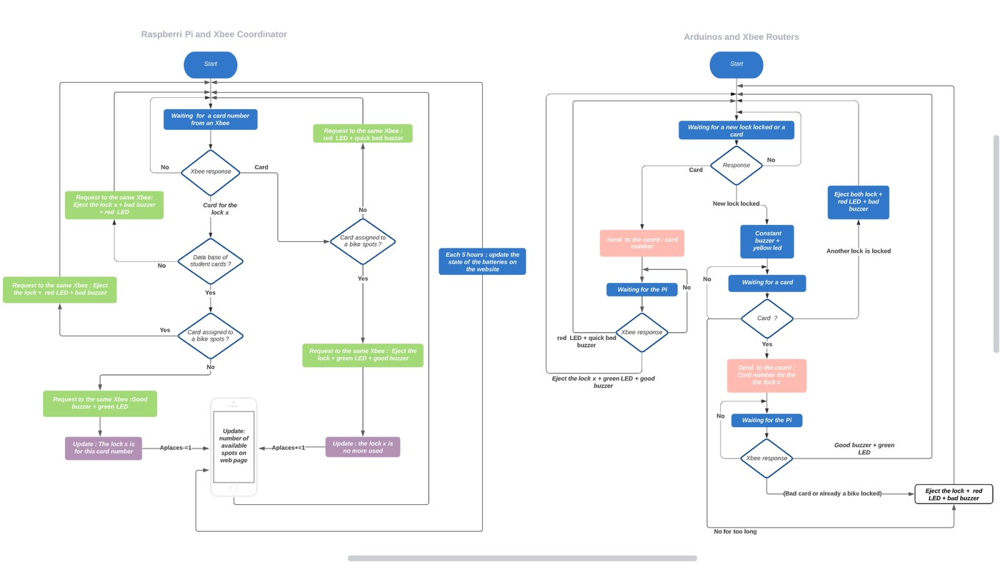
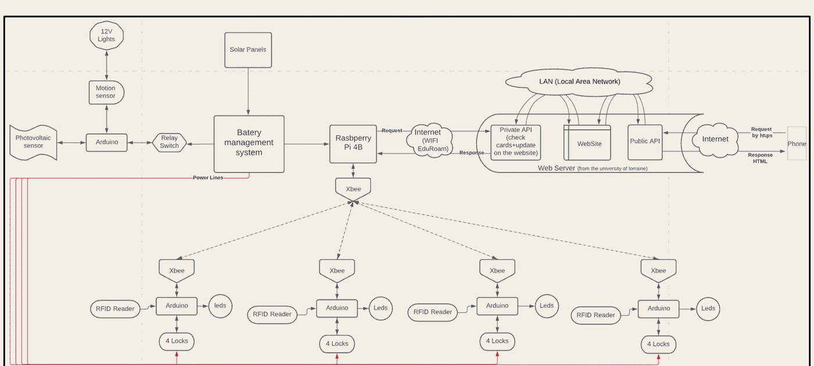
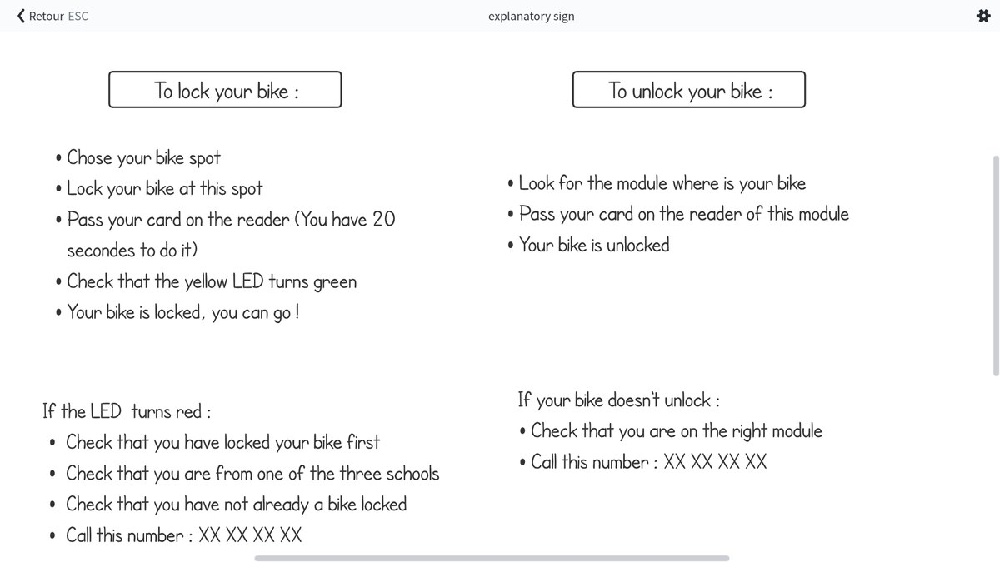

Responsable de la partie informatique
IT lead
Abri vélos intelligent,
Université de Lorraine
Smart bike shelter,
University of Lorraine
Mai 2022 — déc. 2022 · 8 mois. Abri innovant, connecté, modulable et sécurisé —
avec Cincinnati (USA) et Chongqing (Chine).
May 2022 — Dec 2022 · 8 months. An innovative, connected, modular and secure shelter —
with Cincinnati (USA) and Chongqing (China).
Logique Pi & Arduino
Pi & Arduino logic
Organigrammes coordinateur et routeurs : CSN, LED, buzzer, places libres.
Coordinator and router flowcharts: CSN, LED, buzzer, free spots.

Diagramme système
System diagram
Énergie solaire, Pi, modules XBee, APIs et téléphone.
Solar power, Pi, XBee modules, APIs and phone.

Panneau d’instructions
Instruction sign
Texte affiché à l’abri : verrouiller / déverrouiller au badge.
On-shelter copy: lock / unlock with the badge.
